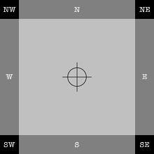
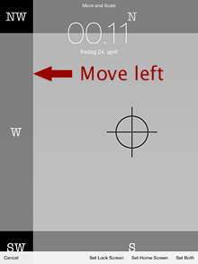
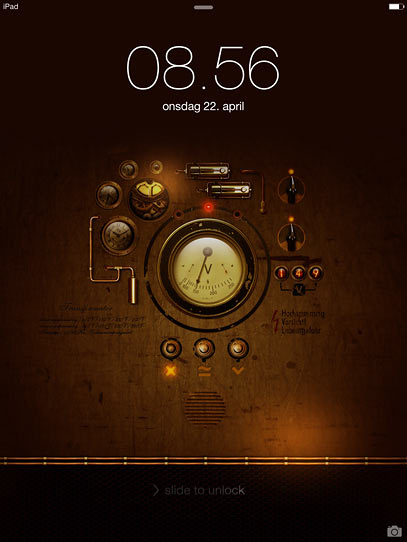

How to add and centre a custom iPad wallpaper
First published on Ka of Isis 150504
Note: Tested in iOS 8.3 on a 3rd generation iPad with a retina screen.
There comes a time when you have done all you can to save the planet, made friends with your enemies, drank from the fountain of youth, and only need that tiny, final, elusive piece for the Nirvana puzzle to fall into place: Replacing the background image of your iPad. Yes, as insignificant as it may seem, the pure sensation of doing away with the ready-made pictures that your friends and family accept as the bleeding edge of technological development and saliva dripping excuses for art. Photographs and geometrical patterns that do not quite cut it. That never invite you to set the iPad alarm clock to 3 AM just to wake up and gloat with smug pleasure at the art of your locking screen.
The theoretical part
Imagine centring the white cross on the red background of the Swiss flag. That comes close to what you will achieve today with your very own, home-made wallpaper for the iPad.
Fig. Thought experiment, only. This is not the image you will use to create your wallpaper. Unless you are from Switzerland, of course.
The third generation retina iPad was a first with a screen real estate of 1536x2048 pixels. If it would only stay in a vertical position, any background wallpaper would only need to equal those dimensions. But given the fact that the iPad can be rotated – while the bacground stays fixed in space – a proper wallpaper needs to be 2048 pixels both vertically and horizontally. The four corners (each measuring 256x256 pixels) will never be seen, justifying the analogy to the flag of Helvetia.
Fig. iPad in vertical and horizontal orientations showing wallpaper “blind spots” and areas common to both positions.
Before you proceed, I owe it to you to let you know that what follows will only be pixel perfect if you can live without the parallax effect built into iOS beginning with version 7. You know, the 3D simulation where app icons seem to float upon a plane (the wallpaper) going this way and that below. To achieve this, the operating system will upscale the wallpaper image. And up is never a good idea when it comes to pixels as the image will inevitably suffer. So, if you insist on the effect, experiment with larger wallpaper dimensions that the one I recommend for this method.
The practical part
I have prepared a test image to use while you follow along with the instructions. Please read the figure text below.
{kind=link}
Fig. Dummy sample of a larger test image. If you are on a desk- or laptop computer, Control- or right-click on the dummy and save the linked 2048x2048 pixels PNG (26 KB). If you are on an iPad, tap the sample image to bring up a web page with the larger PNG, then tap and hold the large image and choose ‘Save Image’.
In the following I will assume that the test image is already on the iPad. If it is not, there are several ways to move a copy over from a computer. That is outside the scope of this article, however, and is not covered.
1. Position the iPad vertically, turn it on, unlock, and tap into Settings. Then go…
2. General > Auto-Lock > Never
This is not a permanent setting, but you do not want the iPad to go to sleep every few minutes while you struggle with this article.
3. Move one level up in General and tap into Accessibility > Reduce Motion and set it to green (ON, that is).
Now you have rid yourself of the bulk of the parallax effect. (Do not say I didn’t warn you.) You will save on battery as well.
4. Move out of General and into Wallpaper. Note that the wording differs from earlier iOS versions.
5. When in Wallpaper, Choose a New Wallpaper > PHOTOS/Camera Roll and tap the test image you recognize from the description in this article.
The iPad brings up a preview of the lock screen (here shown downsized):
Note that the image is only centered vertically. That is because the number of vertical pixels in the image matches the pixel height of the screen exactly. iOS has now way of knowing how you want to position the image horizontally, however, so it defaults to (or suggests, if you may) the upper left (aka north-west) corner both on the screen and in the image. This presents us with the fickly part of this tutorial as Apple only gave us a Move and Scale alternative. They never bothered with the obvious choice of Center (sic). The Scale option is not interesting at this point because the test image has been optimized for a full screen retina display.
6. The only thing you need to do, is move the image 256 pixels horizontally to the left. (Do not worry about vertical positioning; the iPad will not let you do that.) If you have good eyesight, so much the better. If not, you should assist yourself with a magnifying glass. The test image has been prepared in such a way that when you tap and hold a finger on the image and then drag the prescribed 256 pixels to the left – or exactly to where the last black pixels “fall off” the left edge of the screen (and the upper part of the screen is dark grey only) – the wallpaper is centered. (Take a peek at the north-east corner to make sure that no black pixels are visible there.)
7. The wallpaper is now dead centre and you can opt to Set Lock Screen, Set Home Screen, or Set Both. Personally, I prefer to add a glorious image to the Lock Screen but a flat, grey colour (say, R51/G51/B51 or #333333) PNG to the Home Screen(s). App icons are arresting in their own thumbnail kind of way, demanding attention – and I want legible app names. With this reasoning, I choose Set Lock Screen.
8. Close Settings and bring up the Lock Screen or a Home Screen, depending on your choice in the previous step.
The test image is relatively easy to position because it is a “pure” PNG image with sharp transitions between colours. An important step in the preparation of custom wallpapers will always be to add a helping pixel at the border between north-west and north. With PNG and GIF, this is easy: A single pixel with a colour different from the general background, dropped down from the coordinates X=255 and Y=0 (I am in Photoshop now), will be invisible once the image has been centered. JPEG images, on the other hand, tend to blur single pixels, so you may want to add a twin, 256 pixels north by north-east, and move the image between the two.
Once the wallpaper has been centered, it will cover both the 1536x2048 pixels vertical orientation and the 2048x1536 horizontal orientation but whatever is placed in the four corners of the image (like the text blocks NW, NE, SE and SW in the test image), will be invisible when the iPad is rotated.
Tip: If you ever need to shave off wallpaper file size, the four corners could be set to a flat colour. Take edge blurring in JPEG images into account, however.
9. Replace the test image with your own art.
Steampunk
Fig. My very own vertical Lock Screen, courtesy Kopessius. Note that the screendump has been downsized.
Fig. My very own horizontal Lock Screen; downsized.
Fig. A Home Screen with icons and names clearly visible. The screendump has been downsized.
Spring clean
10. If you changed Auto-Lock in Step 2, now is the time to reset to your own preference. Unless you have good reasons for it (like when the iPad is used as a kiosk) leaving the setting at Never, is not good for battery life.
Tip: If you connect the charger to the iPad prior to turning it on, the device will continue to load the battery even when the iPad is in use. Personally I use this trick when on stage, to avoid the sudden death of battery life when in the middle of a song (which I of course have forgotten the lyrics to).
If you want to trash test images and unwanted pictures on the handheld device, please follow the procedure described in the article How to permanently delete pictures from an iPad.